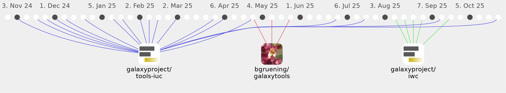

hugolefeuvre

Commits all-time: 261
Commits last year: 128

(75)
- 18d01d4
- 7aaf08f
- 4817fda
- d5c9010
- a08e2c8
- b06c8e5
- 0925cf7
- e692c3c
- 8517ac1
- cece751
- 2e60836
- a20ea5e
- 76bfcfb
- 7d6626d
- 36e12e8
- 4fa95ee
- a9f16e0
- 4b4351b
- e3d56e9
- cdd5798
- 0dba8b4
- 4d7b2a8
- fc1c6c3
- ba35bbd
- edee313
- 9211be8
- ef3630a
- d0b8ff8
- cae3dd2
- e1c3d22
- 2cef8a4
- 9e20c0e
- 60bda19
- 5f27dab
- 76eac84
- 8a35082
- 9d94f84
- 49d4b34
- bb7f44a
- a0753fb
- 0bdd290
- 24d4000
- a7c5064
- aa684af
- a52b962
- 628f34d
- a89cb7c
- 5f561d5
- aad9af9
- 4969634
- ed3e05d
- b200bb1
- 81ded00
- b378149
- 1a85de7
- d08b022
- c66aed3
- db0689e
- 0c35df3
- 40f2f3c
- b61c9bb
- 4709735
- 00e49d2
- 37d3b09
- bcb3776
- 6dc768f
- a361952
- 37e4af5
- a5ec3f5
- 99f8919
- c6a9efb
- fdc6f8d
- 77843bb
- 8cd98c3
- d6a14d2
(45)
- b63f3f4
- 0329c22
- 0cb6f84
- c6d65d9
- 0f8ef53
- 1400593
- 25b6038
- 85645bd
- 3a0c0ad
- 368a4b0
- 63049fb
- ba4df05
- 5a455e6
- 095b9ab
- a36afeb
- 29de3c3
- 3706365
- 13280dd
- ac23cf2
- 6b3e1c2
- e76e0a1
- b14e060
- 6e9783c
- 08f785c
- 5a85338
- 7a0a3f6
- 21dba93
- 8b457de
- b918916
- b2c8622
- 5afafa9
- 0915ebd
- c1ddc0d
- ed8ecc9
- ce9a3ec
- 0a27c2d
- 9285780
- 6b9ad85
- 3e2640f
- 50e774e
- d13cd7c
- f1db03c
- 696b887
- b24a36c
- 5c3dee7
(8)